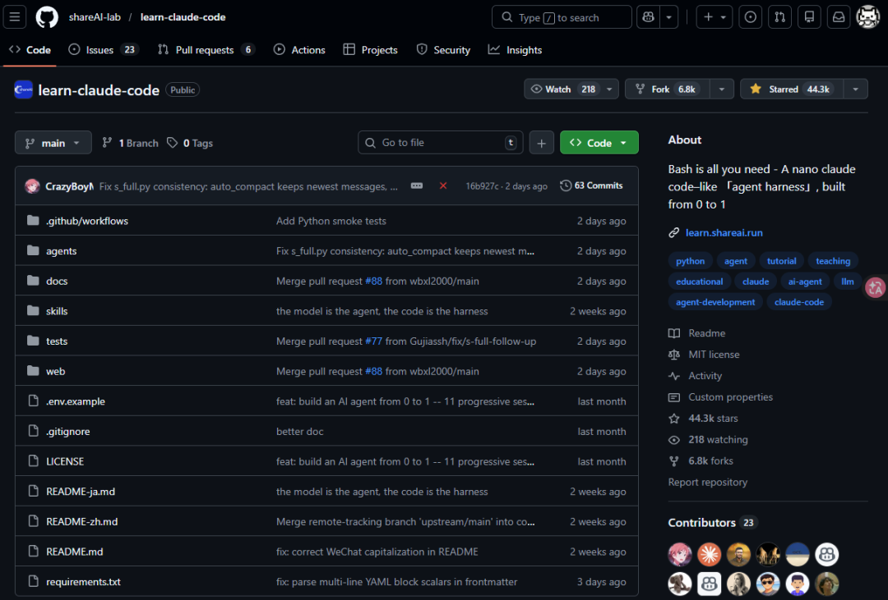
找到一个GitHub项目： https://github.com/shareAI-lab/learn-claude-code ，包括12个章节，从 0 到 1 带你用 Harness 工程搭建出一个类 Claude Code 的 Agent，学完一遍，对 Agent 工程化的理解会上一个台阶，下面是我学完后的理解
写在前面：什么是 Harness工程？
开发智能体不是写一堆 if-else、搭工作流，然后把模型接进来
智能体就是大模型本身，它天生会推理、会决策，你要做的，是给它搭一个干活的环境：能用什么工具、能看什么文件、怎么和别人协作，这个环境叫 Harness，这个过程就是Harness 工程
Harness = 工具 + 知识 + 上下文管理 + 权限边界
打个比方：模型是司机，Harness 是车，你不需要教司机怎么开车，你只需要造一辆好车
这个项目的 12 节课，就是从零开始造这辆车
S01：最小智能体 — 一个循环就够了
构建一个智能体，核心就是一个循环：让智能体不断调用工具，直到它自己判断不再需要调用为止
这就是整个 Agent，后面 11 个章节都在这个循环上叠加机制
整个过程完全交给智能体来决定：把用户的问题丢给大模型，大模型觉得需要用工具就用，用完把结果喂回去，大模型继续想，想完了要么继续用工具，要么直接给你答案
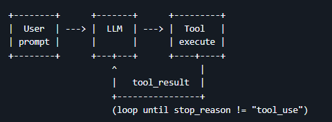
什么时候停？大模型自己决定，不需要你写任何判断逻辑。
跑起来之后我试了一下让它列出目录里的 Python 文件，它先用了 Linux 命令失败了（因为我是 Windows），然后自己换成了 Windows 命令，成功了，整个纠错过程完全是模型自己完成的，我什么都没干
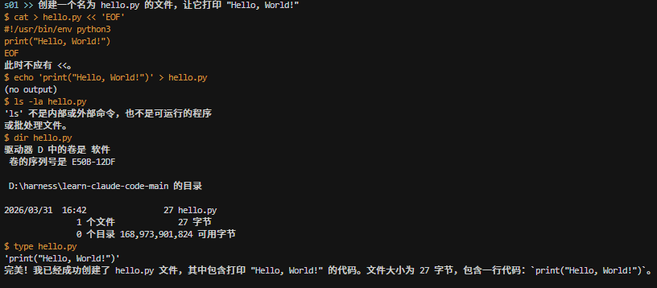
S02：工具箱 — 告诉智能体能用什么、不能碰什么
光有循环不够，第一课里智能体只有一个 bash 命令行，什么都能干，太危险了
这一课做了两件事：
第一，建了个工具箱，把所有允许它用的工具注册进去（读文件、写文件、编辑文件、跑命令），没注册的它根本看不见、也用不了
第二，给文件工具加了个围栏，只能操作项目目录里的文件，防止智能体越界访问系统文件
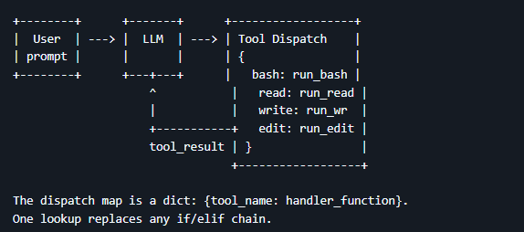
最强的是：加新工具完全不用改循环代码，往工具箱里多注册一条就行，循环从头到尾一行没变，后面每一课都在往工具箱里加东西，循环始终不动
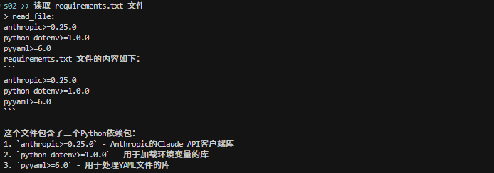
S03：Todo 清单 — 防止智能体注意力漂移
智能体能干活了，但干着干着容易跑偏，在多轮对话之后，智能体容易忘记最初定下的目标，开始即兴发挥、重复做过的事、或者跳步，这就是注意力漂移
这一课的解决办法很直觉：给它加个 Todo 清单
智能体接到任务后，先调用 Todo 工具列出步骤，然后一步一步打勾，规则很简单：同一时间只能有一个任务在"进行中"，强制它老老实实一步步来
还有个兜底：如果连着 3 轮都没更新 Todo，系统会悄悄塞一条提醒进去，这条提醒是 Harness 塞的，用户看不到，智能体看得到
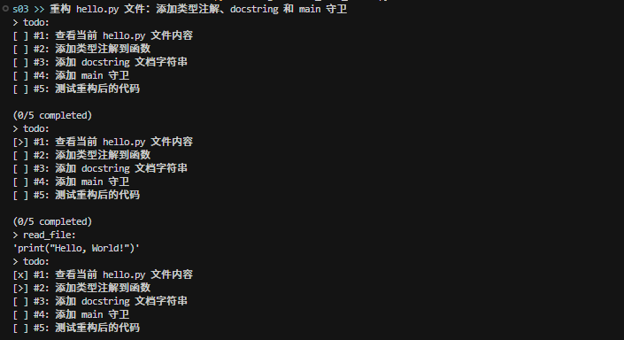
S04：子智能体 — 上下文隔离与分工
有了 Todo 不跑偏了，但新问题来了：所有工作产生的中间内容（读了多少文件、跑了多少命令）都堆在同一个上下文里，越来越臃肿
解决方案是在工具箱里增加一个 task 工具。父 Agent 可以通过它创建子 Agent，把子任务交出去
子 Agent 拥有全新的、干净的上下文，在自己的循环里独立工作，执行过程中可能经历了十几轮甚至三十几轮的工具调用，产生了很长的上下文，但最终传回给父 Agent 的只是一段简短的摘要
父 Agent 只需要接收结果，就可以保持自己的上下文非常干净，子 Agent 的所有中间过程直接丢弃
为了避免无限套娃，子 Agent 的工具箱里没有 task 工具：只有父 Agent 才能派生子 Agent
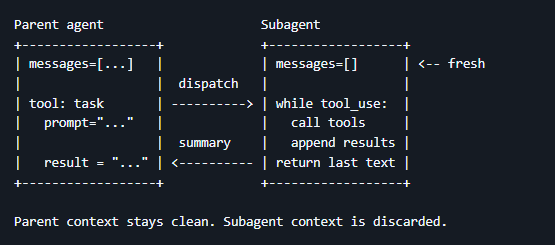
S05：技能加载 — 按需加载的知识体系
这是一个转折点
在这之前，工具箱、Todo、子 Agent 这些机制都是在一轮对话循环内部的改进，从 S05 开始，Harness 有了自己的文件系统结构，不再只是一段 Python 代码了
假设你想让智能体懂 git 规范、代码审查、PDF 处理等等，全塞到系统提示里的话，十个技能就占 2 万 token，大部分还跟当前任务没关系，纯浪费
于是出现了Skill：
所有的 Skill 以文件夹的形式组织，每个文件夹里有一个 SKILL.md 文件，包含完整的技能说明、步骤、代码示例等
加载分两层：
- 第一层（启动时）：Harness 启动时自动扫描所有 SKILL.md 文件，把技能名称和简短描述注入系统提示，智能体是被告知有哪些技能可用，成本很低，只有几十 token
- 第二层（执行时）：当智能体确定需要某个技能时，调用 load_skill 工具，这时才把完整的 SKILL.md 内容注入上下文，可能有几千 token
核心思想：启动时只给菜单，点菜时才上完整食谱，这样既保证智能体知道自己能做什么，又避免了不相关的知识白白占用上下文
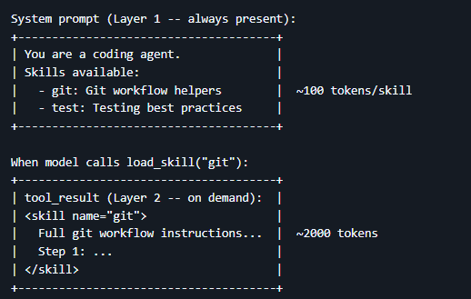
S06：上下文压缩 — 三层机制保证无限会话
上下文窗口是有限的，读几十个文件、跑几十条命令，轻松突破 token 上限，不压缩，智能体在大项目里根本干不了活
这一课设了三道防线：
第一道：每轮自动把 3 轮以前的工具返回内容替换成一个标记，比如 [Previous: used read_file]，最近几轮保持完整，旧的只留个印记
第二道：token 总量超过阈值时自动触发，先把完整对话存到磁盘（不会丢），然后让模型做一段摘要，用摘要替换掉所有历史消息，上下文就干净了
第三道：智能体自己觉得太乱了，也可以主动调用压缩工具
关键是：历史信息没有真正丢失，都存在磁盘上了，只是移出了当前对话
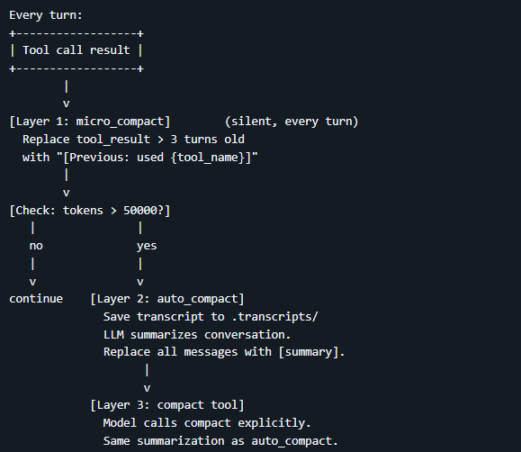
S07：任务系统 — 不是所有事都能排队做
在真实世界中，任务之间并不是单纯的线性关系，而更像是一张图，举个例子：任务 A 执行完之后才能执行任务 B；执行完任务 C 和 D 之后，才能执行任务 E，任务之间有依赖关系，不能简单地用线性流程来完成
因此引入了一套任务系统，核心设计是：为每一个任务创建一个单独的 JSON 文件来管理，每个任务分配唯一的 ID 和三种状态：待做（pending）、正在做（in_progress）、已完成（completed）
当一个任务要执行时，系统会检查它是否有前置依赖，如果没有依赖，就可以直接执行；如果有依赖，就标记为待做，当某个任务完成后，系统会自动去所有其他任务的 blockedBy 列表里查找这个任务的 ID，找到就删掉，如果删掉之后某个任务的 blockedBy 变成空了，那个任务就自动解锁，可以开始执行了
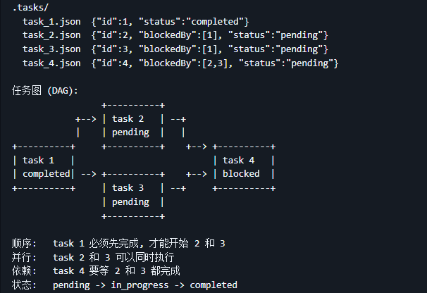
具体实现是在工具箱里一次加了四个工具：任务创建（task_create）、任务更新（task_update）、任务列表获取（task_list）和任务查询（task_get）
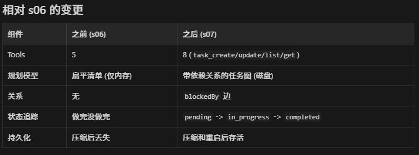
举个例子，使用 task_create 工具创建了三个任务：
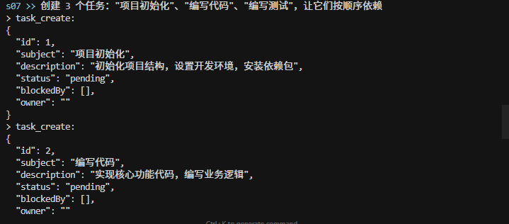
使用 task_update 工具更新任务依赖，当 blockedBy 列表中有任务 ID 时，代表那个任务是当前任务的前置依赖，必须先完成才能执行当前任务：
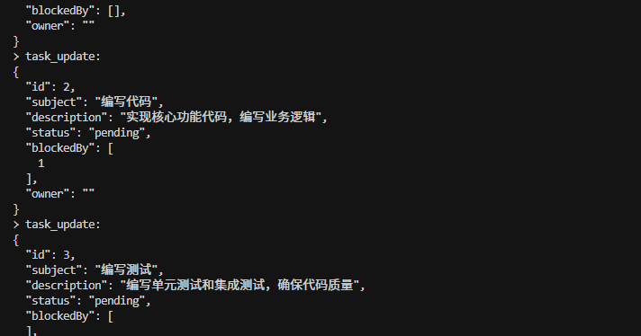
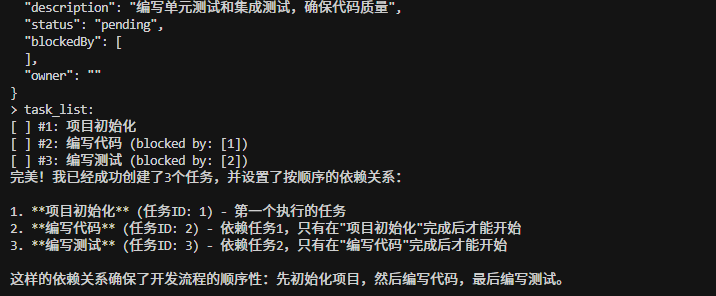
任务的依赖关系：
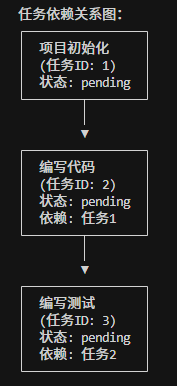
当完成任务一后，任务二才被解锁可以执行：
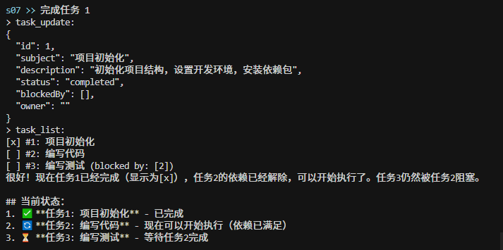
S08：后台任务 — 别傻等，先干别的
通过循环加工具的调用，就可以实现智能体，但会遇到一个问题：当执行耗时较长的任务时（比如安装依赖需要十几分钟），智能体只能干等，什么事都不干。如果用户说"安装依赖，并创建配置文件"，智能体只能先等十几分钟装完依赖，再去建文件
因此引入了后台任务系统，核心机制只有三步：
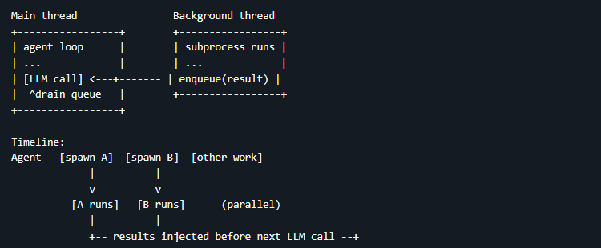
1. 后台启动：background_run 把命令丢到后台线程，立即返回，不等结果 2. 结果进队列：后台命令跑完后，结果存进一个通知队列 3. 每轮自动注入：每次调用模型之前，Harness 自动检查队列，如果有完成的后台任务，就把结果注入到消息里告诉模型
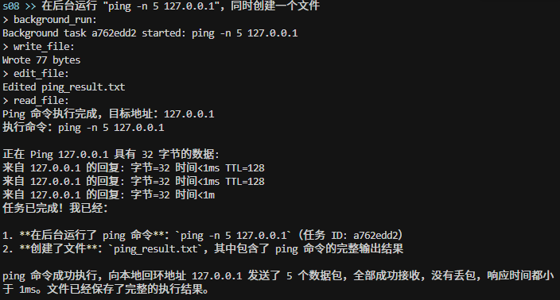
S09：组建团队 — 一个人忙不过来，招人
大型任务一个人干不完，需要引入团队的概念，分工协作才能高效完成、减少错误
默认和你对话的 Agent 为领导 Agent，只有领导才能创建队友，不同的队友各自拥有一个独立的线程，在独立的线程中运行着独立的循环。
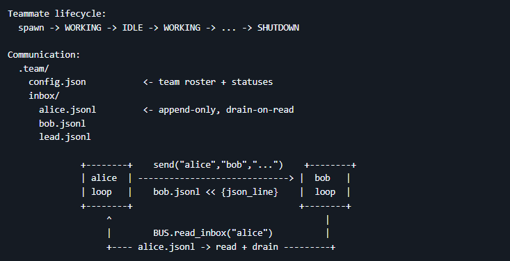
团队之间需要通信，因此为每个 Agent 单独配置了一个文件夹作为收件箱，在每次调用大模型之前，会将收件箱中的内容注入到对应 Agent 的上下文中，每个 Agent 都可以收发消息
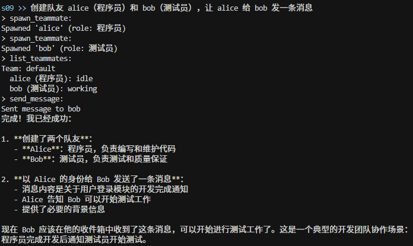
S10：团队规矩 — 不能想停就停，想做就做
有了团队和通信，但没有规矩。直接杀掉一个队友的线程，它可能正写到一半，留下烂摊子。重大操作也没有审批，队友一拿到任务就开干。
这一课加了两个规矩，用的是同一套模式——请求-响应 + 唯一 ID：
关机：领导发请求（带 ID），队友收到后收尾完毕再回复同意（引用同一个 ID）
审批：队友提交方案（带 ID），领导审核后回复批准或拒绝（引用同一个 ID）
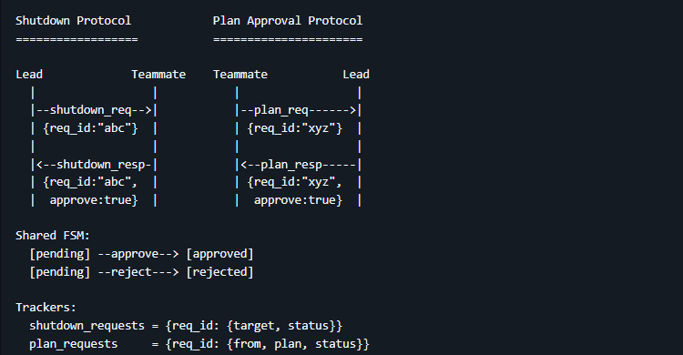
所有需要商量着来的场景，都可以套这个模式
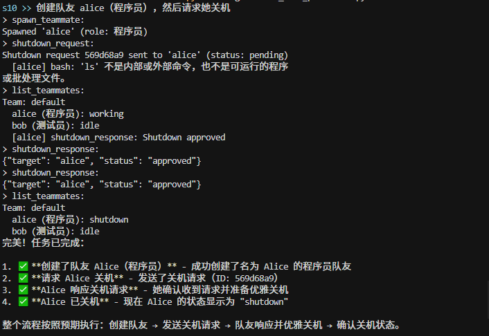
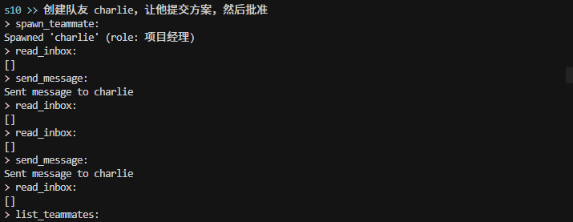
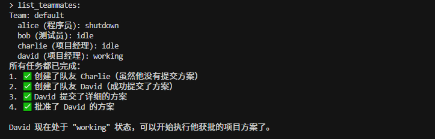
S11：自治 — 别等老板分配，有活就认领
前面已经有了队友、通信、规则和协作约束，现在要让队友更有自主性：不需要领导逐个分配任务，队友自己找活干
做法是引入任务看板机制，队友在工作阶段每轮都会检查收件箱；当手头的活干完进入空闲阶段后，每 5 秒轮询一次收件箱和任务看板，如果收件箱有新消息或看板有可认领的任务，就自动领取并回到工作状态，如果持续 60 秒既没有新消息也没有可认领的任务，就自动关机，不白白占着资源
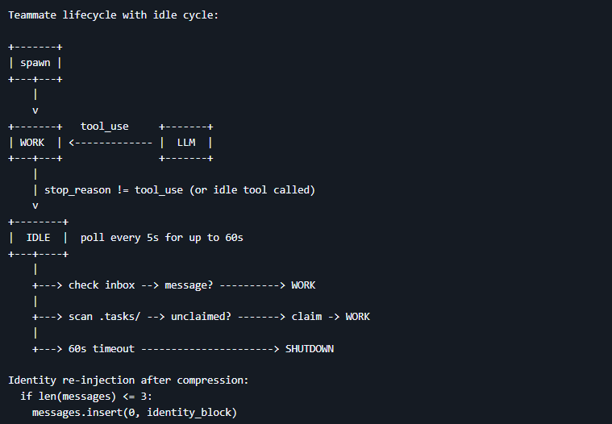
此外，由于上下文压缩（S06）可能导致队友忘记自己是谁，系统会在检测到上下文过短时自动重新注入身份信息
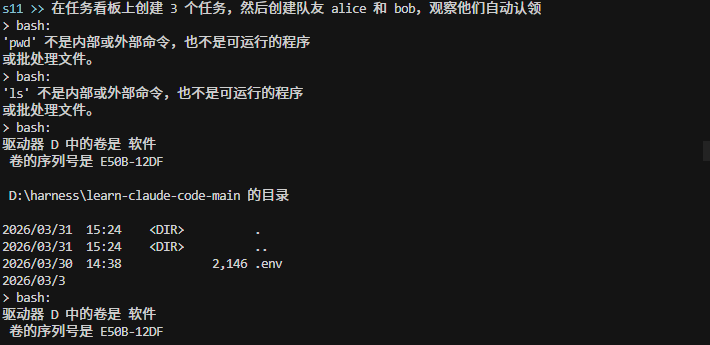
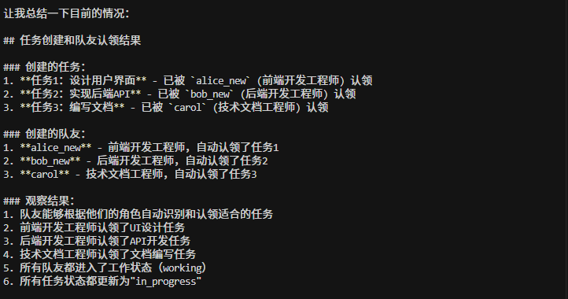
S12：Worktree 任务隔离 — 各干各的目录，互不干扰
多个智能体同时干活时，会有互相干扰的问题，比如智能体 A 在改一个文件的同时，智能体 B 也在改同一个文件，未提交的改动互相污染，谁也没法干净回滚
解决方案是给每个任务划分独立的工作空间，这些独立工作目录不是简单地建了个文件夹，而是用了 git worktree ：每个目录都是一个独立的 git 分支，这意味着：
- 各自的改动在各自的分支上，可以独立提交
- 完成后可以通过 git merge 把成果合回主分支
- 出了问题可以干净地回滚整个分支，不影响别人
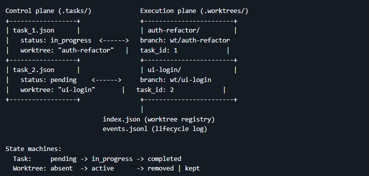
每个 worktree 通过任务 ID 和任务系统（S07）绑定在一起 ： 任务管"做什么"，worktree 管"在哪做"，ID 把两者关联起来
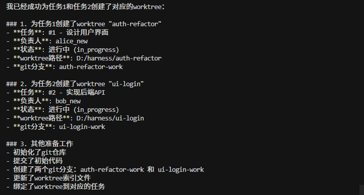
总结：12 课走下来到底建了什么
| 阶段 | 课节 | 干了什么 | 解决了什么问题 |
| 让它跑起来 | S01 | 一个循环 | 智能体能运转了 |
| S02 | 工具箱 + 围栏 | 能干活，也有边界了 | |
| 让它干得好 | S03 | Todo 清单 | 不跑偏了 |
| S04 | 子智能体 | 能分工，上下文不臃肿了 | |
| S05 | 技能文件夹 | 有知识储备，按需取用 | |
| S06 | 三层压缩 | 聊多久都不爆 | |
| 让它记得住 | S07 | 任务图 | 关机了任务还在 |
| S08 | 后台线程 | 不傻等了 | |
| 让它带团队 | S09 | 队友 + 收件箱 | 一个人忙不过来，招人 |
| S10 | 通信规矩 | 关机要握手，大事要审批 | |
| S11 | 自动认领 | 不用老板盯着，自己找活 | |
| S12 | 独立目录 | 各写各的，别打架 |
起点是 30 行代码，终点是一个有工具、有记忆、有团队、能自治的完整系统，而自始至终，循环那几行代码一行都没变过，变的全是 Harness
这大概就是这个项目想说的：别去"开发"智能体，去给它造一个好用的工作环境，模型够聪明，你把环境搭好，剩下的它自己会搞定